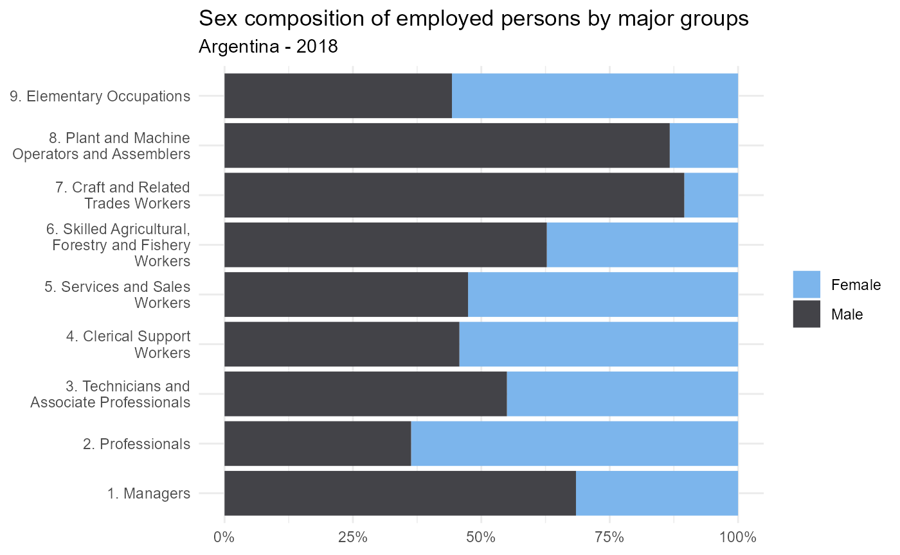
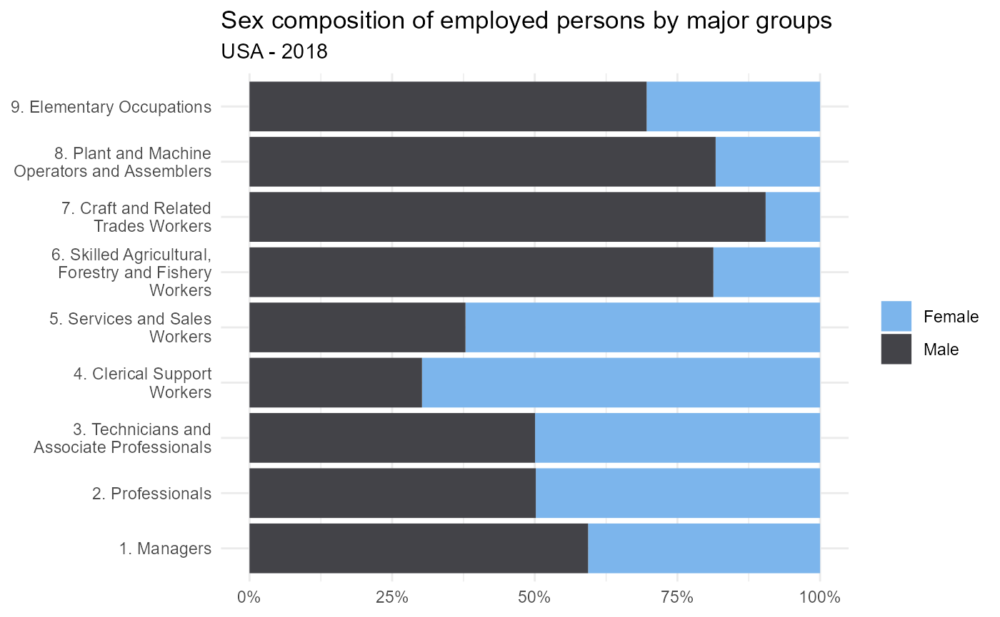
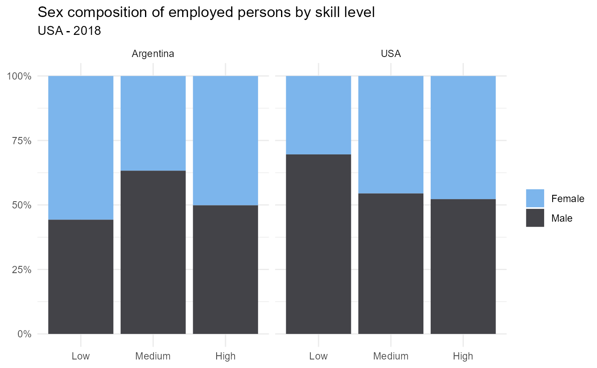

You can combine occupationcross with genre information available in households surveys. The package allows for international comparations on the genre distribution of occupations. Let’s see a few examples usign the parameters add_major_groups and add_skill of our function reclassify_to_isco08
Install the development version of occupationcross from GitHub with:
#devtools::install_github("Guidowe/occupationcross")Load first occupationcross, tidyverse and the package for the Argetinean households survey eph
We get the dataframe from the individual version of the EPH survey (1st quarter 2018) and organize its labels using the eph package.
eph.2018.01.original <- get_microdata(year = 2018,
trimester = 1,
type='individual') %>%
organize_labels(., type='individual')Using reclassify_to_isco08 and setting add_major_groups as TRUE, we obtain the reclassification for the EPH’s variable “PP04D_COD”, which is originally clasified trough the national clasification system CNO2001.
eph.2018.01 <- reclassify_to_isco08(eph.2018.01.original,
PP04D_COD,
classif_origin="CNO2001",
add_major_groups = TRUE,
add_skill = TRUE)Now we can tabulate our new variable “major_group” using the EPH’s variable for genre “CH04” and plot the results
genre_composition.arg<- eph.2018.01 %>%
filter(ESTADO==1 & !is.na(major_group)) %>%
mutate(genre= case_when(CH04==1 ~ "Male",
CH04==2 ~ "Female")) %>%
group_by(major_group,genre) %>%
summarise (absolute=sum(PONDERA)) %>%
group_by(major_group) %>%
mutate(percentage= absolute/sum(absolute)) %>%
ungroup() %>%
mutate(major_group = str_wrap(major_group,width = 25))
ggplot(genre_composition.arg,
aes(x = major_group,y = percentage,fill = genre))+
geom_col()+
labs(title = "Sex composition of employed persons by major groups",
subtitle = "Argentina - 2018")+
theme_minimal()+
theme(axis.title = element_blank(),
legend.title = element_blank())+
scale_fill_hc()+
scale_y_continuous(labels = scales::percent)+
coord_flip()
The graph above shows the sex composition of each major group. The major group 1 (Managers) is unevenly distributed since 68% of people working at these occupations are men. This is the case also for occupations from major groups 8 and 7, related to shop-floor industrial activities, which are mostly done by men (87% and 90% respectivly).
Let’s compare these results to the occupations distribution by sex in the United States of America. We shall use the IPUMS’s version of Annual Social and Economic Supllement from the Current Population Survey 2018. If you want to reproduce this example, you should ask for the data extract of CPS at https://cps.ipums.org/
cps_asec_2018 <- readRDS("../data-raw/bases/Base_USA2018.RDS")Once the dataframe is loaded, we can use reclassify_to_isco08 in order to reclassify the variable “OCC2010” that contains the occupation clasification with the “Census2010” system. We also set add_major_groups as TRUE.
cps_asec_2018 <- reclassify_to_isco08(cps_asec_2018,
OCC2010,
classif_origin="Census2010",
add_major_groups = TRUE,
add_skill = TRUE)Now we tabulate the data and plot it.
genre_composition.usa<- cps_asec_2018 %>%
filter(EMPSTAT==10 & !is.na(major_group)) %>%
mutate(genre= case_when(SEX==1 ~ "Male",
SEX==2 ~ "Female")) %>%
group_by(major_group,genre) %>%
summarise (absolute=sum(ASECWT,na.rm = T)) %>%
group_by(major_group) %>%
mutate(percentage= absolute/sum(absolute)) %>%
ungroup() %>%
mutate(major_group = str_wrap(major_group,width = 25))
ggplot(genre_composition.usa,
aes(x = major_group,y = percentage,fill = genre))+
geom_col()+
labs(title = "Sex composition of employed persons by major groups",
subtitle = "USA - 2018")+
theme_minimal()+
theme(axis.title = element_blank(),
legend.title = element_blank())+
scale_fill_hc()+
scale_y_continuous(labels = scales::percent)+
coord_flip()
The graph shows that occupations are unequaly distributed at major group 1 (Managers), whereas women represent 41% of total employmen and men 59%. The distribution is quite even for major groups 2 and 3. while women are the majority at major groups 4 and 5. In major groups 6 to 9, men are the majority.
Let’s analyse the sex distribution of skill levels based on the 9 ISCO major groups. Remember that we added before the param add_skill in the reclassify_to_isco08() function to get the 3-tiers variable for skill level, indicating whether the job is high, medium or low skilled.
Now we can tabulate the data and plot it to compare
genre_composition.skill.arg<- eph.2018.01 %>%
filter(ESTADO==1 & !is.na(skill_level)) %>%
mutate(genre= case_when(CH04==1 ~ "Male",
CH04==2 ~ "Female")) %>%
group_by(skill_level,genre) %>%
summarise (absolute=sum(PONDERA)) %>%
group_by(skill_level) %>%
mutate(percentage= absolute/sum(absolute))
genre_composition.skill.usa<- cps_asec_2018 %>%
filter(EMPSTAT==10 & !is.na(skill_level)) %>%
mutate(genre= case_when(SEX==1 ~ "Male",
SEX==2 ~ "Female")) %>%
group_by(skill_level,genre) %>%
summarise (absolute=sum(ASECWT,na.rm = T)) %>%
group_by(skill_level) %>%
mutate(percentage= absolute/sum(absolute))
genre_composition.skill <- bind_rows("Argentina" = genre_composition.skill.arg, "USA"= genre_composition.skill.usa, .id="country")
ggplot(genre_composition.skill,
aes(x = skill_level,y = percentage,fill = genre))+
geom_col()+
facet_wrap(. ~ country) +
labs(title = "Sex composition of employed persons by skill level",
subtitle = "USA - 2018")+
theme_minimal()+
theme(axis.title = element_blank(),
legend.title = element_blank())+
scale_fill_hc()+
scale_y_continuous(labels = scales::percent)
In Argentina, 56% of Low skilled occupations were performed by women in 2018, whereas in USA only 30% of this type of occupations were performed by women.
In Argentina, High complexity occupations were perfomed 50-50 percent among women and men. In USA, women performed 48% of high complexity occupations.
The package occupationcross has thereby allowed us to carry out an international comparison based on different occupations classification systems. The same analysis that we have put forward for genre could be done using any of the socio-economic variables avaiable in datasets, such as age, region, incomes, etc.